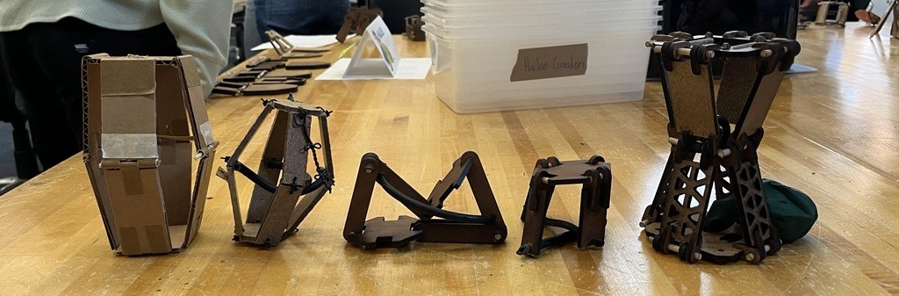

Overview
In the first year design course at Olin College, students build a jumping contraption inspired by nature and refined through rapid prototyping. I took inspiration from how octopus push their legs out in the water to propel themselves by creating four legs that are tensioned and then released by rubber tubing causing the legs to snap in and push the hopper up.

The project also required a delay mechanism or trigger, so that the hopper didn't jump immediately after you released it. It was in this process that I learned the most about iteration and perseverance.
To achieve my final prototype, I started with sketches, then sketch models, and experimental prototypes to validate design choices. Below is a lineup of all my prototypes throughout the design process
